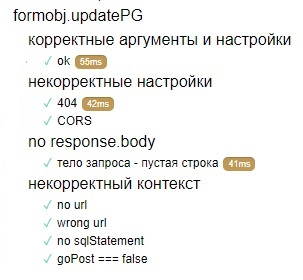

Unit-тестирование Mocha.js & Chai.js
Описание проекта
Исходные файлы размещены на Github и доступны по этой ссылке
Перейти на страницу с прогоном unit-тестов можно по этой ссылке
Технологии проекта: HTML, Javascript, CSS, PHP и PostgreSQL. Библиотеки и фремворки: Lodash.js, Mocha.js, Chai.js, ajv.js.
Javascript представлен тремя файлами:
- DOMadding.js отвечает за динамическую генерацию части контента в HTML,
- script.js обрабатывает отправку форм и выводит в HTML ответы - здесь реализованы основные функции,
- test.js содержит unit тесты по проекту, написанные с помощью фрэймворка Mocha.js и библиотеки Chai.js.
Основная функция в script.js - pressSubmit. Это функция верхнего уровня, которая через вложенные вызовы запускает другие вспомогательные функции - они обеспечивают процесс обработки данных формы, отправку запросов на сервер, получение и вывод ответов. В ходе этого процесса данные хранятся в объекте формы formObj, который генерируется при вызове pressSubmit. То, каким образом обрабатываются данные различных типов форм, определено в статических объектах внутри объекта formTypes, которые вместе с объектом формы formObj участвует в вызове упомянутых функций. Большинство из них вызываются в качестве метода formObj.
Описание unit-тестирования
Для каждой функции в script.js написан блок тестов,которые покрывают 3 группы кейсов:
- Функция вызывается с корректными аргументами в корректном контексте,
- Функция вызывается с некорректными аргументами или в некорректном контексте,
- Функция вызывается без аргументов.
Проверки для аргументов позволяют отслеживать некорректные вызовы функций по ходу кода.
Т.к. разрабатывается модельный JavaScript проект, есть возможность проектировать функции любым способом. В реальных условиях работы нужны более гибкие правила тестирования и разработки, которые согласуются командой проекта - здесь я предлагаю лишь один из подходов, который применяется в условиях «конь в вакууме».
В первой группе кейсов прорабатываются варианты предусмотренных сценариев и их результатов. Эта группа тестирует категорию пользовательских "ошибок" - пользовательские действия, которые возможны, но не приводят к результату - например, отправка неполной формы или указание неправильного пароля. Для них производится логирование в консоли и вывод сообщения на странице, т.к. они предназначены конечному пользователю.
Проблемы интеграции функциональных модулей, которые могут приводить к ошибкам скрипта, отсеиваются в следующих группах кейсов - вторая и третья группы кейсов прорабатываются вместе.
Проектирование функций основано на принципе TDD (test driven development). Чтобы повысить testability функций и улучшить процесс их интеграции, по мере их выполнения осуществляются разные проверки. В начале исполнения кода функции проверяется наличие аргументов и их характеристики. Если нужны определенные данные из контекста, по ходу исполнения кода функции это проверяется. Если эти проверки не проходят, происходит «выброс» ошибки, которая обрабатывается блоком try/catch в функции верхнего уровня (pressSubmit) - она логирует сообщения ошибок в консоли и выводит общее сообщение в форму на странице. Таким способом также «отлавливаются» все встроеные ошибки при выполнении вложенного в try/catch кода.
Эти ошибки главным образом используются для отладки интеграции разных частей веб-ресурса: html, js (функций и статических данных). Если pressSubmit срабатывает некорректно, видно какой тест в какой вложенной функции был провален. После качественной отладки и тестирования такие ошибки не срабатывают в рамках пользовательских сценариев.
Пример unit-тестирования
formObj.updatePG - это метод объекта формы, который отправляет SQL запросы на сервер. Функция использует Fetch API и по завершению передаёт текстовый ответ обработчику ответов. Асинхронность обеспечивается с помощью ключевых слов async/await (которые работают на основе промисов). Для данной функции тестируются следующие условия:
- Корректный ответ записывается в свойство объекта формы и используется обработчиком ответа с сервера. Тестируется на уровне интеграции функций в тестах для pressSubmit.
- Аргумент url вложенной функции fetch ссылается на php-файл в корневой директории проекта. Его наличие/корректность проверяется регулярным выражением. Выброс ошибки при некорректном url проверяется unit-тестами.
- Для запуска отпраки запроса на сервер необходим флаг goPost равный true. Он выставляется на внешнем уровне, если предыдущие шаги пройдены успешно. Значение true проверяется в тестах с корректными условиями запроса. Значение false тестируется в отдельном тесте на предмет выброса ошибки.
- SQL statement должен быть не пустой строкой. Корректное значениетестируется в тесте на отправку запроса на сервер. Выброс ошибки при пустой строке тестируется в отдельном тесте. Семантическая корректность запросов проверяется тестами в Postman и с помощью ручного тестирования базы данных c помощью sql запросов.
- Поскольку функция fetch практически всегда возвращает response, даже в случае Bad Request и т.д., отдельная проверка генерирует ошибку, если response.ok === false. Выброс ошибки проверяется unit-тестами.
- Ошибки типа "Failed to fetch" (ex. ошибки CORS policy) "всплывают" и обрабатываются на верхнем уровне функции pressSubmit. Тестируются там же. В тестах этой функции данная проверка дублируется для подтверждения, что в выбранных тестовых условиях срабатывает эта ошибка.
- Для отправки POST запроса определен минимальный состав объекта Headers (второй аргумент функции Fetch). Корректность обработки запросов с этими заголовками проверяется в Postman.
- Текст ответа, который генерирует response.text() должен быть строкой ненулевой длины. Выброс ошибки при нулевой строке проверяется unit-тестами. Семантическая корректность ответа с серрвера проверяется в функции обработки ответа.
Ниже приведена выдержка из test.js с тестами для метода formObj.updatePG.

Unit-тестирование: детали
Тесты реализованы по принципу модульности: есть общие шаблонные переменные, которые определяют неизменные данные (например, образцы типов данных).
Группы тестов для каждой функции используют эти переменные, либо объявляются локальные тестовые переменные, не доступные снаружи блока тестов.
Если тестовые скрипты все же меняют глобальные переменные (например, значение value для тэгов input внутри формы), то изначальные значения восстанавливаются с помощью блоков afterEach и after.
Таким образом, тестовые группы каждой функции независимы друг от друга и не влияют на глобальное окружение - их содержание/состав/расположение могут меняться любым способом.
Асинхронные функции проверяются асинхронными тестами.
Статические данные для обработки разных типов форм хранятся в объекте formTypes. Он проверяется на соответствие шаблону JSON schema при помощи ajv.js плагина - автоматически проверяются новые formType, если такие необходимы.
По всему проекту также используются вспомогательные функции из библиотеки Lodash.js
Тщательная проработка и покрытие всех кейсов даёт гибкость и возможность вносить изменения в проект в дальнейшем.